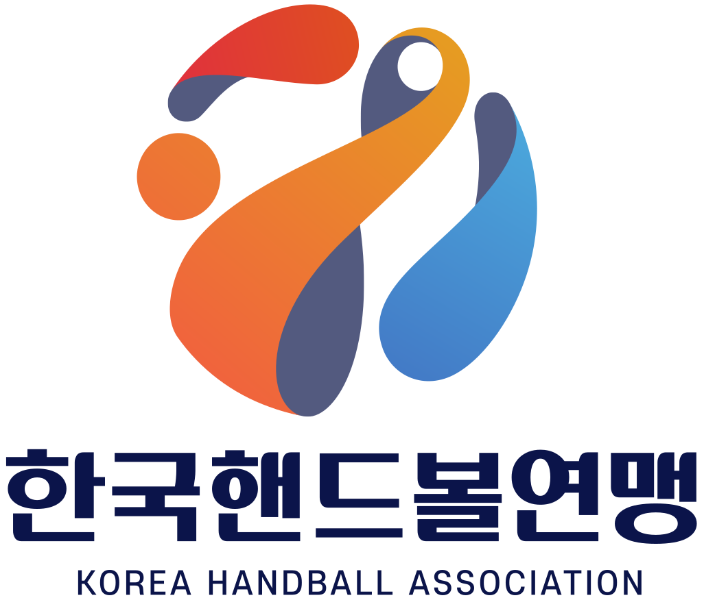
핸드볼 H리그
참가 구단
[ 펼치기 · 접기 ]

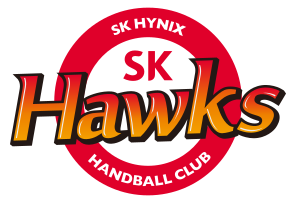
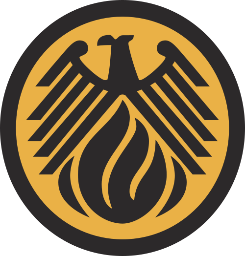
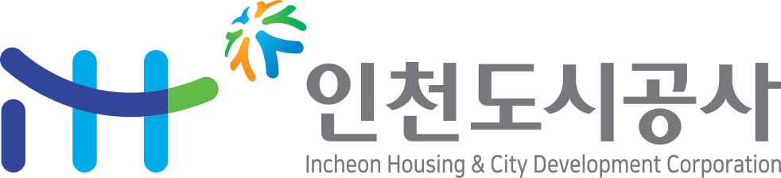
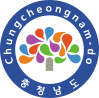
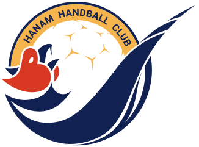
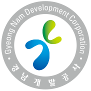
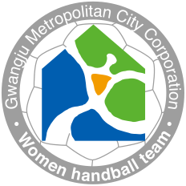
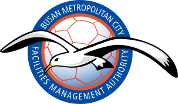
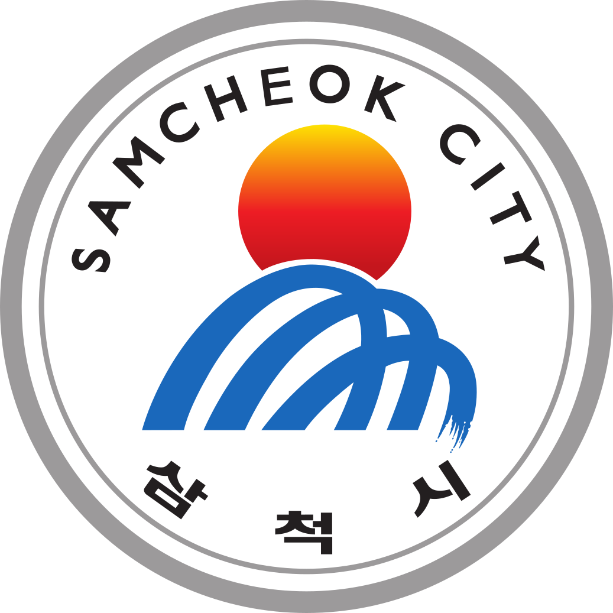
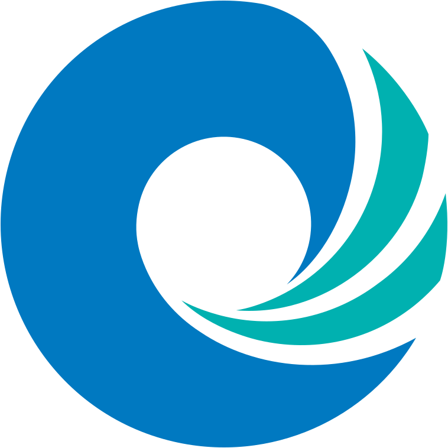

1. 개요
대한민국의 핸드볼 H리그 여자부 소속 프로 핸드볼단. 연고지는 효빈광역시이며, 효빈광역시청이 직접 운영하는 구단이다.
실업팀 시절부터 꾸준한 성적을 내왔으나, 2020년대 들어 '서브컬처의 성지' 효빈시의 전폭적인 지지와 레일루미네라는 막강한 앰버서더 군단을 등에 업고 K-핸드볼 흥행의 주역으로 급부상했다. 축구와 농구에 가려졌던 핸드볼의 인기를 캐릭터 마케팅으로 멱살 잡고 끌어올렸다는 평을 받는다. 사실상 공 던지는 애니메이션을 라이브로 보는 기분이라고(...).
2. 역사
1984년에 창단된 유서 깊은 팀이다. 하지만 2006년 윤대환 전 시장 재임기 당시 "핸드볼은 비인기 종목이니 예산을 깎아라"라는 무식한 지시와 함께 구단 해체 위기를 겪기도 했다. 당시 윤 시장은 핸드볼 공을 보고 "이거 그냥 쓰레기통에 집어 던지는 놀이 아니냐"는 망언을 남겨 핸드볼 팬들의 엄청난 공분을 샀다.
다행히 1세대 덕후 박현만 시장의 복귀와 현 박효빈 시장의 전폭적인 '성덕 행정' 덕분에 예산 자립도가 급격히 높아졌다. 현재는 리그 내에서 가장 탄탄한 재무 구조와 관중 동원력을 자랑하는 '파워풀 효빈'의 상징이 되었다.
3. 팀 컬러
일명 '레인보우 어택'. 특정 선수에게 의존하지 않고 7명의 선수가 무지개색처럼 다양한 공격 루트를 창출하는 것이 특징이다.
특히 효빈교통공사 캐릭터들의 상징색에 맞춰 포지션별 유니폼 디테일이 조금씩 다른데, 이 포지션별 유니폼을 전부 수집하려는 하드코어 팬들 때문에 구단의 굿즈 매출이 매년 수직 상승 중이다. 결국 돌고 돌아 또 굿즈 장사다.
4. 홈구장
북구 고송동에 위치한 효빈실내체육관을 홈구장으로 사용한다.
지하철 2호선과 6호선이 교차하는 고송교차로역 근처 교통의 요지에 있어 접근성이 매우 좋다. 경기장 입구에는 구단 공식 마스코트인 한바다 대형 등신대와 함께, 효빈시청 핸드볼 유니폼을 입은 고나미를 비롯한 캐릭터들이 팬들을 맞이한다. 매 경기마다 핸드볼 관람을 빙자해 '성지순례'를 온 오타쿠 팬들로 인산인해를 이룬다.
5. 앰버서더 및 마케팅
이 구단의 진정한 무기.
효빈광역시의 자랑인 레일루미네 캐릭터 전원이 구단의 앰버서더로 활동한다.
- 7m 던지기 상황: 전광판에 4호선 다로나가 등장해 엄격한 표정으로 "파울은... 안 됩니다!"라며 상대 키커를 멘탈적으로 압박하는 살벌한 연출이 나온다.
- 득점 시: 8호선 막내 유리아가 몽키스패너를 붕붕 휘두르며 "요소로(출발)!"를 외치는 전용 애니메이션 컷인이 화려하게 송출된다.
- 하프타임: 레일루미네 캐릭터를 담당하는 한일 양국 성우들이 수시로 경기장을 방문해 직접 시구를 하거나 하프타임 팬미팅을 진행한다. 이때는 핸드볼 경기장이 아니라 사실상 '성우 라이브 뷰잉장'으로 장르가 변환된다(...).
6. 여담
- 엠마빵 보충제: 구단 공식 회복식(리커버리 푸드)으로 엠마 베르데의 이름이 붙은 팥빵이 지급된다는 소문이 있다. 선수들이 이 빵을 먹고 후반전에 힘을 내서 역전승을 거둔 경기가 많아 팬들 사이에서는 '기적의 빵'으로 불린다.
- 박효빈 시장의 열정: 1996년생인 박효빈 시장(실제 사용자와 동명이인)은 핸드볼 결승전이 열리는 날이면 아예 시장실 업무를 체육관 VIP석에서 본다고 한다. 본인의 최애 캐릭터인 고나미 굿즈를 잔뜩 두르고 블레이드를 흔들며 열렬히 응원하는 모습이 중계 카메라에 매우 자주 잡힌다.
- 입사 경쟁률: 구단 프런트 입사 경쟁률이 웬만한 9급 공무원 시험보다 높다. 덕력과 행정력을 동시에 갖춰야 하기 때문인데, 면접 질문으로 "핸드볼 룰과 뱅드림 캐릭터의 연관성을 서술하시오" 같은 괴악한 난이도의 문제가 나온다는 카더라가 있다(...).
- 굿즈 수익: 핸드볼 팀의 연간 굿즈 수익이 웬만한 K리그나 KBL 구단을 압도한다. 레일루미네와 협업하여 발매된 한정판 무지개색 핸드볼 공은 중고 시장에서 '부르는 게 값'일 정도로 프리미엄이 붙는다. 이 막대한 수익으로 효빈시는 핸드볼 선수단에게 업계 최고 수준의 처우와 연봉을 보장해 주고 있다.